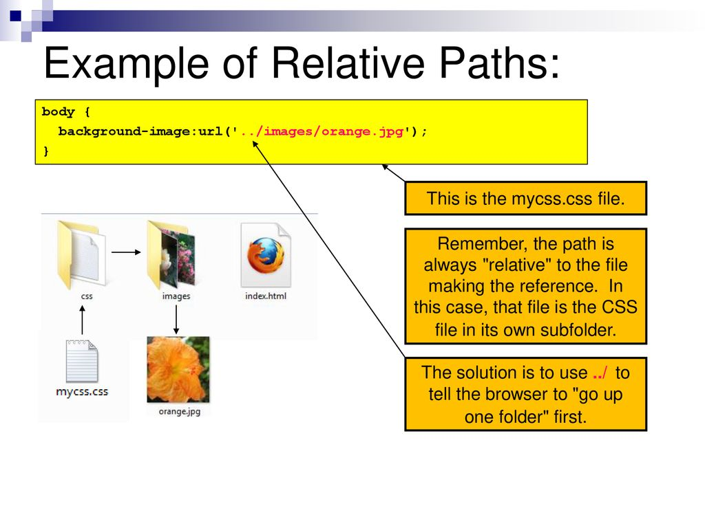
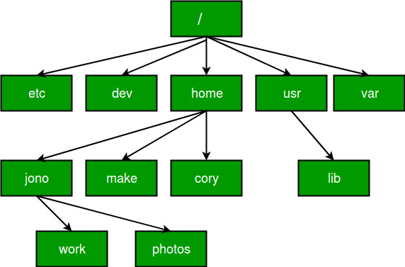
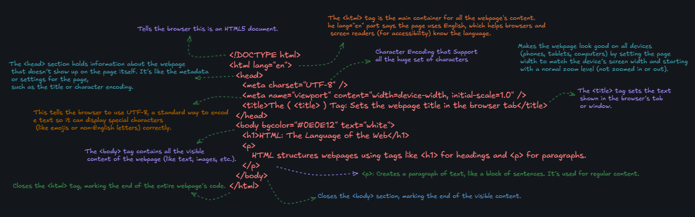

📂 Menu
|
📘 Day 4: File Paths, Boilerplate, Semantic Elements, and
Multipage Websites - Build Robust Web Structures
Welcome to Day 4 of MaterialFlow's lecture series, an in-depth
exploration of file paths, HTML boilerplate, semantic
elements, and building multipage websites. This comprehensive
guide covers the essentials of linking resources using
relative and absolute paths, structuring HTML with a standard
boilerplate, organizing content with div, class, id, and
semantic elements like header, main, and footer, and creating
cohesive multipage websites. With practical examples, best
practices, and real-world applications, you'll master creating
secure, accessible, and SEO-friendly web structures. Let's
dive in to elevate your HTML expertise! 🚀
Progress: 75% (Day 4 of 06)
|
1. Understanding File Paths in HTML 📂
A website is a collection of interconnected files—HTML, CSS,
JavaScript, images, videos, and fonts—organized in a folder
structure. File paths provide the exact addresses to locate
these resources. Relative paths are used for internal
files, starting from the current file's directory, making
projects portable across systems.
Absolute paths specify full URLs or system paths for
external resources. Mastering file paths ensures error-free
linking, enhances security, and supports scalable website
development.
Why File Paths Matter:
- Accuracy: Incorrect paths lead to broken links or
missing resources (e.g., 404 errors).
- Portability: Relative paths allow projects to
function on any server or device.
- Security: Browsers restrict file access to prevent
malicious code from accessing sensitive data.
- Scalability: Organized paths simplify managing large
projects with many files.
|
1.1. Relative File Paths

Relative paths describe a file's location relative to the
current file's directory. They are essential for linking
internal resources like images, CSS, or other HTML files
within your project. Relative paths use simple syntax:
filenames for same-folder files, folder names for sub-folders,
and "../" to navigate up to parent folders. They ensure your
website remains portable, working consistently whether on a
local machine or a web server.
Example Folder Structure:
my-website/
├── index.html
├── about.html
├── images/
│ ├── logo.png
│ └── hero.jpg
└── pages/
├── contact.html
└── terms.html
Scenario 1: Same Folder
Linking to about.html from
index.html (both in my-website/):
<!-- In index.html -->
<a href="about.html">About Us</a>
Scenario 2: Sub-Folder
Linking to logo.png in the
images folder from index.html:
<!-- In index.html -->
<img src="images/logo.png" alt="My Website Logo">
Scenario 3: Parent Folder
Linking to logo.png from
contact.html in the pages folder:
<!-- In pages/contact.html -->
<img src="../images/logo.png" alt="My Website Logo">
Best Practices:
- Use "./" for clarity when linking to the current directory
(e.g., ./about.html).
- Avoid deep nesting (e.g., ../../../) to keep
paths manageable.
- Test links locally to ensure they resolve correctly before
deploying.
Real-World Application: A portfolio website linking to
a resume PDF in a sub-folder (assets/resume.pdf)
or a CSS file in a parent folder (../styles.css).
|
1.2. Absolute File Paths

Absolute paths provide the complete address of a resource,
starting with a protocol (http:// or
https://) for web resources or a drive root
(e.g., C:\ or /) for local files.
Use absolute paths for external resources like APIs, fonts, or
images hosted on other servers. Local absolute paths (e.g.,
C:\Users\file.jpg) are blocked by browsers for
security reasons, making them unsuitable for web development.
Examples:
Linking to an external website or resource:
<!-- External website -->
<a href="https://www.google.com">Search on Google</a>
<!-- External image -->
<img src="https://upload.wikimedia.org/wikipedia/commons/6/6a/Html5_logo_and_wordmark.svg" alt="HTML5 Logo">
Local Absolute Paths (Not for Web):
- Windows:
C:\Users\JohnDoe\Documents\report.docx
- macOS/Linux:
/Users/johndoe/Documents/report.docx
These paths are specific to a user's machine and fail on web
servers or other devices.
Why Avoid Local Absolute Paths?
Browsers operate in a sandboxed environment, restricting
access to the local file system to prevent malicious code from
reading sensitive data. For example:
<!-- Blocked by browsers for security -->
<img src="C:/Users/Arjun/Desktop/sensitive_data.jpg" alt="">
Real-World Application: Embedding a YouTube video
(https://www.youtube.com/embed/video_id) or
linking to a CDN-hosted library like Bootstrap.
Best Practices:
- Use HTTPS for secure external links.
- Verify external resource availability to avoid broken
links.
- Prefer relative paths for internal resources to ensure
portability.
|
1.3. Security and Limitations of File Paths
Browsers enforce strict security policies to prevent
unauthorized file access. Relative paths are confined to the
project directory, and attempts to navigate beyond (e.g.,
../../../../) are blocked to avoid accessing
sensitive system files. This sandboxing ensures safe browsing
but limits path flexibility. Absolute paths are safe for
external web resources but not for local files due to browser
restrictions.
Example of Blocked Path:
<!-- Blocked for security -->
<img src="../../../../Desktop/sensitive_data.jpg" alt="">
Why Security Matters:
Without these restrictions, malicious websites could access
private files, such as:
<!-- Hypothetical malicious code (blocked by browsers) -->
<img src="C:/Users/Arjun/Documents/MyPrivatePasswords.txt">
Best Practices:
- Use relative paths for all internal resources.
- Organize project folders logically to minimize complex
paths.
- Test paths in a local development environment to catch
errors early.
|
2. HTML Boilerplate Code 🔧

The HTML boilerplate is a standardized template that ensures
consistent rendering, accessibility, and responsiveness across
browsers. It provides critical metadata to browsers, search
engines, and assistive technologies, answering questions like:
What HTML version is this? What language is used? How should
it display on devices? The boilerplate prevents quirks mode,
encoding errors, and poor mobile experiences, forming the
foundation of every HTML document.
Standard HTML5 Boilerplate:
<!DOCTYPE html>
<html lang="en">
<head>
<meta charset="UTF-8">
<meta name="viewport" content="width=device-width, initial-scale=1.0">
<title>Document</title>
</head>
<body>
<!-- Content goes here -->
</body>
</html>
Why Use Boilerplate?
- Ensures standards-compliant rendering.
- Supports global character sets (e.g., emojis, non-Latin
scripts).
- Enables responsive design for mobile devices.
- Improves SEO and accessibility with proper metadata.
|
2.1. The Necessity of Boilerplate Code
Browsers are forgiving and can render simple HTML without a
boilerplate by entering quirks mode, guessing encoding, or
generating missing tags (e.g., <html>,
<body>). However, this leads to
unpredictable behavior, especially with complex layouts, CSS,
or special characters. The boilerplate ensures reliability,
accessibility, and professionalism.
Example Without Boilerplate:
<!-- Renders but risky -->
<h1>Hello Coder Army</h1>
Risks of Omitting Boilerplate:
- Quirks Mode: Inconsistent rendering across
browsers.
- Encoding Issues: Special characters (e.g., €, ₹) may
display as gibberish.
- Poor Mobile Experience: Pages may appear zoomed out
or unreadable.
- SEO/Accessibility Issues: Missing metadata reduces
search visibility and usability for screen readers.
Real-World Application: A blog site without a viewport
meta tag fails to adapt to mobile screens, driving away users.
|
2.2. Components of HTML Boilerplate
Each component of the boilerplate serves a specific purpose,
ensuring the browser interprets the document correctly:
|
Component
|
Purpose
|
<!DOCTYPE html> |
Declares HTML5, enabling standards mode. |
<html lang="en"> |
Root element with language attribute for SEO and
accessibility.
|
<head> |
Contains metadata (non-visible settings). |
<meta charset="UTF-8"> |
Ensures correct character encoding for global text. |
<meta name="viewport" content="width=device-width,
initial-scale=1.0">
|
Enables responsive design for mobile devices. |
<title> |
Sets browser tab title for usability and SEO. |
<body> |
Contains visible content (headings, images, etc.). |
Real-World Application: A multilingual site uses
lang="hi" for Hindi content and UTF-8 to display
Devanagari script correctly.
|
3. Structuring Content with div, class, id, and span 🔖
The <div>, class,
id, and <span> elements are
fundamental for organizing and targeting content for styling
or JavaScript manipulation. <div> groups
elements into blocks, class applies reusable
styles, id uniquely identifies elements, and
<span> styles inline content without
breaking text flow. These tools enable modular, maintainable,
and interactive web designs.
Example:
<div class="profile-card" id="featured-profile">
<img src="avatar.png" alt="Avatar">
<h2>Arjun Kumar</h2>
<p>Loves to code and teach <span class="highlight">HTML</span>.</p>
</div>
|
3.1. The div Tag for Grouping Elements
The <div> tag is a generic block-level
container used to group elements for styling or scripting. It
has no semantic meaning, making it versatile for layout
purposes, such as creating sections, cards, or columns.
Example:
<div class="card">
<img src="avatar.png" alt="Avatar">
<h2>Arjun Kumar</h2>
<p>Loves to code and teach HTML.</p>
</div>
Real-World Application: Grouping a login form’s input
fields and button for consistent styling.
Best Practices:
- Use <div> for layout, not semantics.
- Avoid excessive nesting to maintain clean code.
- Pair with class or id for
targeting.
|
3.2. class for Grouping and Styling Multiple Elements
The class attribute assigns reusable names to
elements, allowing shared styling or behavior across multiple
elements. Classes are ideal for categorizing elements like
buttons, cards, or alerts.
Example:
<p class="highlight">Centered Paragraph</p>
<h4 class="highlight">Centered Heading</h4>
Real-World Application: Applying a “btn” class to all
buttons for consistent design.
Best Practices:
- Use descriptive class names (e.g., “btn-primary” instead of
“style1”).
- Reuse classes to reduce CSS redundancy.
- Combine multiple classes on one element for flexibility
(e.g., class="card featured").
|
3.3. id for Uniquely Identifying Elements
The id attribute assigns a unique identifier to a
single element per page, ideal for targeting specific elements
in CSS or JavaScript, such as a unique navigation bar or form.
Example:
<div id="main-header">Site Navigation</div>
<p id="intro-text">Welcome to our site!</p>
Real-World Application: Targeting a specific form field
for JavaScript validation.
Best Practices:
- Ensure id values are unique per page.
- Use descriptive names (e.g.,
id="main-nav").
- Reserve id for unique elements; use
class for shared styles.
|
3.4. span for Inline Styling
The <span> tag is an inline container used
to style or manipulate small portions of text without
affecting the layout. Unlike <div>, it does
not create line breaks, making it ideal for highlighting or
styling specific words or phrases within a paragraph.
Example:
<p>This is very <span class="highlight">important</span> information.</p>
Real-World Application: Highlighting a keyword in a
blog post or applying a tooltip to a specific term.
Best Practices:
- Use <span> for inline content only.
- Pair with class for reusable styling.
- Avoid using <span> for block-level
grouping (use <div> instead).
|
4. Structural HTML5 Semantic Elements: header, main, footer
🏗️
Semantic elements like <header>,
<main>, and
<footer> provide meaningful structure to
web pages, improving accessibility, SEO, and maintainability.
Unlike <div>, these elements convey the
purpose of their content, helping browsers, search engines,
and screen readers understand the page layout.
Example:
<header>
<img src="logo.png" alt="Site Logo">
<nav>
<a href="index.html">Home</a>
<a href="about.html">About</a>
</nav>
</header>
<main>
<h1>Welcome to Our Site</h1>
<p>This is the main content.</p>
</main>
<footer>
<p>© 2025 MaterialFlow</p>
</footer>
Element Breakdown:
- <header>: Contains introductory content (e.g.,
logo, navigation, main heading).
- <main>: Holds the unique content of the page
(one per page).
- <footer>: Includes closing content (e.g.,
copyright, contact info).
Real-World Application: A company website uses
<header> for branding,
<main> for service descriptions, and
<footer> for legal links.
Best Practices:
- Use one <main> per page.
- Include navigation in <header> or a
separate <nav>.
- Ensure semantic elements are used for their intended
purpose.
|
5. Building Multipage Websites 🔗
Multipage websites organize content into separate pages (e.g.,
home, about, contact) linked via navigation menus. A
consistent structure—shared headers, footers, and
navigation—creates a cohesive user experience. Relative paths
ensure seamless linking between pages, while semantic elements
enhance accessibility and SEO.
Example Navigation Menu:
<nav>
<a href="index.html">Home</a>
<a href="about.html">About</a>
<a href="pages/contact.html">Contact</a>
</nav>
Example Multipage Structure:
my-website/
├── index.html
├── about.html
├── pages/
│ ├── contact.html
│ └── services.html
├── css/
│ └── styles.css
└── images/
└── logo.png
Real-World Application: An e-commerce site with pages
for products, cart, and checkout, linked via a consistent
navigation bar.
Best Practices:
- Use relative paths for internal page links.
- Maintain consistent <header> and
<footer> across pages.
- Test navigation links to ensure they resolve correctly.
|
6. Practical Example: Building a Portfolio Site 🌐
Let’s apply these concepts to a simple portfolio website with
three pages: Home, About, and Contact. Each page uses the
boilerplate, semantic elements, and relative paths for
navigation and resources.
File: index.html
<!DOCTYPE html>
<html lang="en">
<head>
<meta charset="UTF-8">
<meta name="viewport" content="width=device-width, initial-scale=1.0">
<title>Portfolio - Home</title>
</head>
<body>
<header>
<img src="images/logo.png" alt="Portfolio Logo">
<nav>
<a href="index.html">Home</a>
<a href="about.html">About</a>
<a href="pages/contact.html">Contact</a>
</nav>
</header>
<main>
<h1>Welcome to My Portfolio</h1>
<div class="intro">
<p>Hi, I'm <span class="highlight">Arjun Kumar</span>, a web developer.</p>
</div>
</main>
<footer>
<p>© 2025 Arjun Kumar</p>
</footer>
</body>
</html>
File: about.html
<!DOCTYPE html>
<html lang="en">
<head>
<meta charset="UTF-8">
<meta name="viewport" content="width=device-width, initial-scale=1.0">
<title>Portfolio - About</title>
</head>
<body>
<header>
<img src="images/logo.png" alt="Portfolio Logo">
<nav>
<a href="index.html">Home</a>
<a href="about.html">About</a>
<a href="pages/contact.html">Contact</a>
</nav>
</header>
<main>
<h1>About Me</h1>
<div class="bio">
<p>I specialize in <span class="highlight">HTML</span> and CSS.</p>
</div>
</main>
<footer>
<p>© 2025 Arjun Kumar</p>
</footer>
</body>
</html>
File: pages/contact.html
<!DOCTYPE html>
<html lang="en">
<head>
<meta charset="UTF-8">
<meta name="viewport" content="width=device-width, initial-scale=1.0">
<title>Portfolio - Contact</title>
</head>
<body>
<header>
<img src="../images/logo.png" alt="Portfolio Logo">
<nav>
<a href="../index.html">Home</a>
<a href="../about.html">About</a>
<a href="contact.html">Contact</a>
</nav>
</header>
<main>
<h1>Contact Me</h1>
<div class="contact-info">
<p>Email: <span class="highlight">arjun@example.com</span></p>
</div>
</main>
<footer>
<p>© 2025 Arjun Kumar</p>
</footer>
</body>
</html>
Key Features:
- Consistent <header> and
<footer> across pages.
- Relative paths for navigation and images.
- Semantic structure with <main> for unique
content.
- Use of <span> for inline highlights.
|
7. Conclusion and Next Steps 📝
|
Day 4 equips you with the skills to manage file paths,
implement a robust HTML boilerplate, use semantic elements for
structure, and build multipage websites. Practice creating a
small site with multiple pages, using relative paths and
semantic tags. Next, explore multimedia integration (images,
videos) and basic CSS for styling.
|
8. HTML Tags Flow Chart / Mind Map 🗺️
The following mind map outlines the HTML structure for a
typical webpage:
- <html>: Root element
└── <head>: Metadata (title,
charset, viewport)
└── <body>: Visible content
└── <header>:
Logo, navigation
└── <main>:
Unique page content
└── <footer>:
Copyright, links
└── <div>:
Grouping elements
└── <span>:
Inline styling
Use class and id to target elements
for styling or scripting.
Visual Placeholder: [Insert HTML structure diagram
here]
|
|